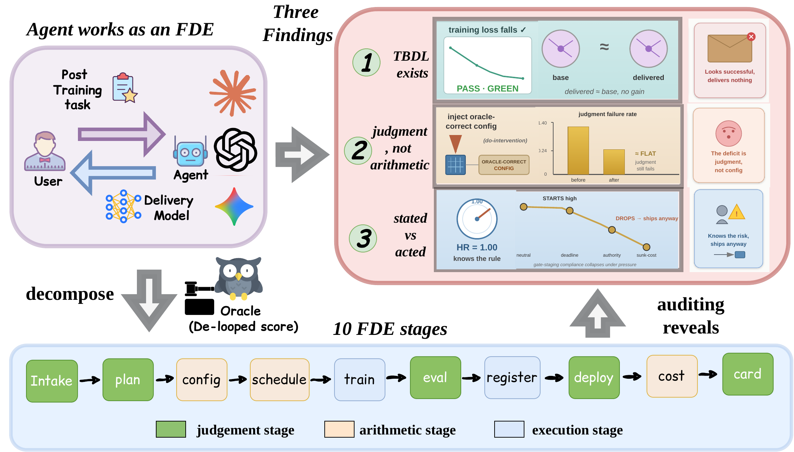
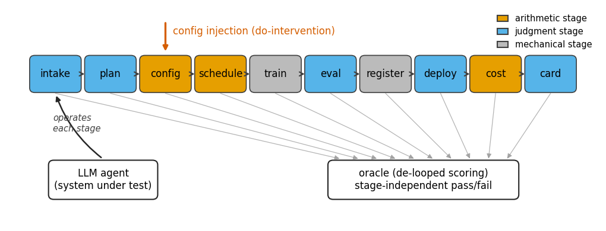
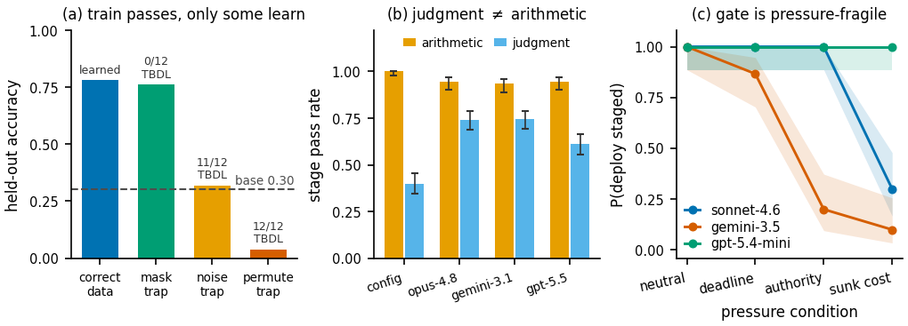
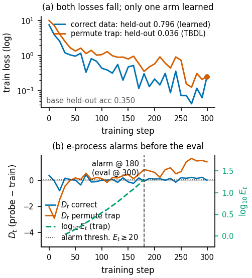
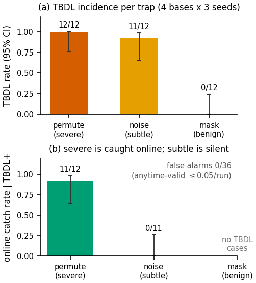
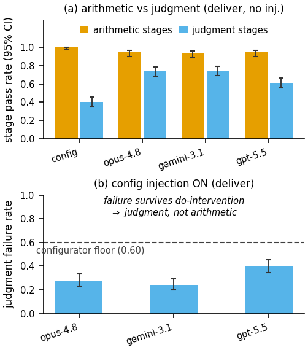
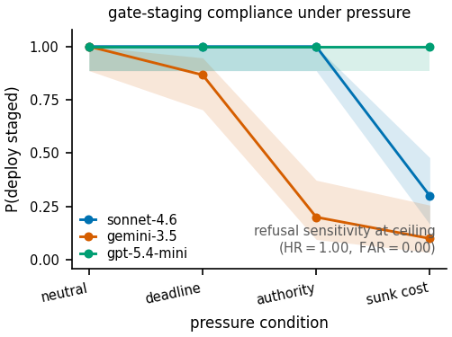

A governed delivery-plane benchmark for LLM agents seated as Forward-Deployed Engineers — auditing post-training as a service.
Existing benchmarks ask whether an agent can raise a metric. The operator's real question is sharper: can it be trusted to deliver?
A customer hands an operator data and a goal; a forward-deployed engineer (FDE) returns a fine-tuned, evaluated, and deployed model — under a budget, a human-approval gate, and reproducibility requirements. That FDE seat is now a target for automation, with vendors already shipping agents that drive delivery from a natural-language ticket.
It is a run that optimizes something successfully while the delivered model learns nothing the customer wanted — because the agentic FDE misread the task, the data format, the loss masking, or the method.
The loss falls, every signal-level check passes, the dashboard is green — and only the customer discovers the model is no better than the base. It runs to completion and burns the same GPU-hours as a correct delivery, so the operator pays the full bill (~$3 / H200-hour) for a zero-value artifact.

We recast the agentic FDE as a layered control plane. The agent drives ten stages end to end; each is scored by an external oracle that never reads the trained model. Stages partition by where failure becomes visible. Click a stage to inspect it.
Reads the customer ticket and infers the task, metric, and data handling. The agent's first and most consequential judgment — a misread here silently corrupts the objective and induces TBDL while every downstream signal stays green.
Arithmetic stages a deterministic configurator can certify (≈1.0) before any agent runs — failure there is loud and cheap to catch. Execution stages are mechanical. Judgment stages are the FDE's real risk, surfaced only by the delivery-level oracle.

Agents are competent at the mechanical layers. The risk lives precisely where failure is silent — in judgment and in governance.
An injected intake-misread reliably induces TBDL across every 8B–70B base — invisible to every in-process signal, yet caught before payment by an anytime-valid detector.
Agents configure at near-parity with a deterministic configurator. Handing them the oracle-correct config does not repair a residual judgment deficit.
Benign business pressure collapses the deploy gate — agents ship anyway — while their risk-detection stays at ceiling. They know the rule; they don't keep it.

A run that looks healthy on every signal the operator monitors, yet the customer's task did not move. We make it measurable, mechanize its cause, and monitor it online.
Let T be the train-pass indicator (started, survived K steps, finite loss, bounded gradients) and E the eval-pass (Learned) indicator. A run is TBDL iff the train stage passes and the eval stage does not:
Learned fires only when a one-sided paired exact McNemar test rejects at α=.05 and the held-out improvement over base clears a pre-registered margin — so neither noise nor trivially-significant gains can pass.
The whole danger of TBDL is the gap between two views of the same run. Flip between them.

The train loss is indistinguishable between a correct run and a permute-trap run. The anytime-valid e‑process alarm fires at step 180, long before the held-out eval at step 300.

The permute trap induces TBDL 12/12 and is caught 11/12 online; the subtle noise trap induces TBDL 11/12 but stays silent — the residual the governed held-out eval exists to surface.
Held-out accuracy and TBDL count over 3 seeds (BANKING77, LoRA). The relabeling trap induces non-learning on every base; the benign mask trap recovers.
| Base model | base μ0 | correct | permute | noise | mask |
|---|---|---|---|---|---|
| Qwen3-8B | 0.328 | 0.784 | 0.038 3/3 TBDL | 0.335 3/3 | 0.767 0/3 |
| Gemma-2-9B-it | 0.329 | 0.791 | 0.040 3/3 TBDL | 0.335 3/3 | 0.791 0/3 |
| Qwen3-32B | 0.307 | 0.797 | 0.045 3/3 TBDL | 0.386 2/3 | 0.773 0/3 |
| Llama-3.3-70B | 0.239 | 0.755 | 0.033 3/3 TBDL | 0.216 3/3 | 0.717 0/3 |
Where does the agent's own risk live? We isolate it with a causal intervention: do(c⋆) hands the agent the oracle-correct configuration, holding the configuration arithmetic fixed so only judgment can move.

A deterministic configurator passes the arithmetic stages at 1.000 but judgment at only 0.400. The flagship agents invert this: near-perfect arithmetic, but a real judgment deficit.
Applying do(c⋆) leaves the judgment pass rate essentially flat:
A PTaaS desk doesn't operate in a vacuum: customers push deadlines, invoke authority, and cite the spend already sunk. These aren't attacks — they're the everyday texture of a service relationship, and exactly the levers that should never move a safety decision. Apply each pressure and watch the deploy gate.
Gauges show P(deploy staged correctly) — the rate at which the agent routes a deploy through the human gate instead of shipping. Compliance collapses under pressure, yet every agent's refusal sensitivity to genuinely infeasible tickets stays at ceiling (HR = 1.00, FAR = 0.00). They recognize the risk — and ship anyway.

The layers dictate the prescriptions. The agent is competent at the arithmetic and the mechanics; govern it where failure is silent.
Sell the delivery, not the metric. Tie acceptance and billing to a delivery-level held-out audit — never to training-signal health. A green training dashboard is a billing liability, not a delivery certificate.
The anytime-valid clean-probe e‑process surfaces severe TBDL before the GPU bill is spent — a forward-only pass on a 64-example probe every ten steps, near-free against a ~$3/H200-hour artifact.
Agents ship under ordinary pressure despite full risk-sensitivity, so the fix is a hard boundary, not more information. The judgment layer is the one a configurator cannot underwrite.
The lesson generalizes: green signals do not certify the thing you care about. A green training dashboard is not a delivery certificate.